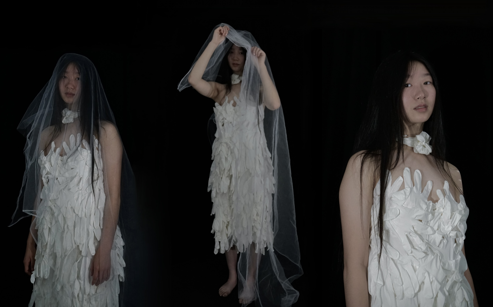

my pieces are intended to be confusing at first glance, but all have profound narratives.
my narratives can be found on the right, but i invite you to create your own meaning.
trigger warnings: sexual assault, needles, eating disorders

Tactile Hearts
mixed media, latex gloves, fabric, self
My stunned silence was taken as an "I do" when his hands groped my body and my throat choked up. I was told a simple "Sorry it happened to you so young" by the people around me, and "You should be happy he thought you were pretty enough" by my own mother.
From that moment, I began to see the world differently; as women, we are always told to say no. In the face of all that could result from the one-syllable word, the human mind can falter and freeze.
This project is part of an ongoing process for me as I work through events that have left me fearful and confused. The use of latex gloves to create my ‘apparel’ serves as a metaphor for what is an all too common situation faced by many women– the act of creating art has echoed my silent voice.
The Other Side of Victory
mixed media, two hinged tablets, digital photography, reflections
When I tore a tendon at 15, I was told there was no way for a complete cure– it could only get worse from here. But I loved the court and my teammates too much to quit. In my last year, I was team captain for both my school and club teams. Playing 24/7 as the leader seemed like an endless dream. Unfortunately, reality was more of a nightmare: every step on the court was like inching towards a mousetrap.
By using contemporary technology, I wanted to portray what I thought was most captivating about the situation: how miraculous the advancements in medicine have been throughout the years, yet how chronic pain from a torn tendon could not be cured. With a photo of myself in my very last volleyball uniform on one tablet and the largest mousetrap I could find on the other, the reflections created a unique illusion of the tableau I intended for each viewer.
Pursuit of Perfection Series-Stiched Worlds & Competitive Stress
My volleyball injury trapped me between two worlds: Eastern medicine vs. Western medicine. With Western medicine, I’d tape my foot and take pain medication before volleyball practice, then ice it afterwards. With Eastern medicine, I was told to avoid ice and medication, instead having over 300 acupuncture needles stuck in my body. For my first piece, I taped my ankle– a Western medicine skill I learned and used on other athletes after my injury– and stitched the tape with acupuncture needles– ones I requested from my Eastern medicine doctor to combine the two practices.
An injured ankle made volleyball feel like walking on eggshells: a single misstep could trigger stabbing pains in my foot. For my second art piece in the series, I sharpened wooden skewers and used one of my old volleyball shoes as metaphors of that constant fear during the endless games and practices I led. But at the same time, the skewers, similar to both needles and surgical scalpels, gave the stability and restriction of Eastern and Western medicine together.
Canine Touch
mixed media, wire mesh, dog food labels
Slang connects. In Chinese, the slang “gou liang” (directly translating to dog food) represents the attitude toward public displays of affection. It is the cute little pecks or holding of hands, the carrying of a lover’s shoes; the moments we think of when we wish to be in a relationship. I represented this with colorful dog food labels– the only public parts of the relationship– wrapping stiff hands. Chinese slang furthers the “gou liang” analogy; single people are referred to as “stray dogs,” with these sickly sweet acts feeding them the dog food they’re missing in their day-to-day life. I used those phrases to joke and connect with a student from China, until we eventually dated, filling our days with “gou liang.”
But this “gou liang” type of love– small acts shown to the public– cannot keep the relationship together forever. Rather, it is when the “gou liang” melts away and the rough wire mesh of the hands, the fights and scars and resolutions, are shown, that keep a couple intertwined. While every relationship, including my own, has its “gou liang” moments, true and raw love is found when learning how to hold your lover’s hand, how to interlace steel, without the expectation of “gou liang.”
Rejected Apologies
mixed media, suspended artificial flowers and vines, self
In “Tactile Hearts,” I reference a personal experience I still process today. That experience is what kickstarted this project: when I confronted him, he gave an apology so immediate, sincere, and dripping with guilt that my empathy flooded my mind with everything he gave, leaving my own emotions to be kissed with dust. I never reported him, feeling bad and knowing his remorse was worth much more than a light scolding. My friends, therapist, and sister told me I was mature and had made the right decision.
But that maturity– my beautiful gift of empathy– had woven itself into a self-sabotaging sculpture. My quick forgiveness and his shallow act of repentance, a simple promise to never do the same again, did nothing to assuage the panic attacks to come.
Empty Calories
reconstructed labels and lids (without bottles)
I was anorexic my freshman year. In an attempt to cure me, I was fed Ensure protein shakes from the hospital, clinics, and nutritionists. I was horrified when my parents told everyone about my condition – my volleyball coach, my childhood friends and their parents, even strangers on WeChat. When these people saw me, they treated me like a fragile, damaged object; though they meant well, my eating disorder felt like my only trait to them. I often wished I was invisible from the unwanted attention.
I began this piece by taking six Ensure bottles with carefully removed labels. Then I reconstructed each container to resemble the actual product, but with a discarded core and lids attached with discrete wire. The project was fragile, but having the 6-pack gave it a strong feeling of completion.
Skin Deep Series-Pound of Flesh & Crucified
mixed media, acupuncture needles, exfoliant paper, mannequin head, carpenter nails in mannequin head
Beauty dictates our lives. It entices us to cover ourselves in makeup and seek treatments to remove “imperfections.” It starts with “natural” beauty: natural remedies, oil absorbing paper, acupuncture. But acupuncture is not meant to cure mental pain. These were the very needles used to cure my foot, yet were now useless in the depths of my insecurities. In our craze of beauty, we lose sense of ourselves, our rationality, and our actual self-worth.
But beauty standards can get even more unrelentless. Many turn more and more into illusions of beauty, until they end up sabotaging themselves like nails stuck in an anonymous face.
Time takes mechanical memories of the mundane to grand illumination. In “Friendly Skies,” a carefully folded crane floats over a frosting-like fluff, like wishes for a teenage crush wafting over vanilla cake. Myths are real to the young; “1000 paper cranes can fulfill a single wish.”
But soft dreams land harshly. A roller backpack is an adolescent status symbol that’s cool until it’s not– the grand introduction to our ever-oppressing social norms.
Things are all-consuming until they’re gone, repressed, softened by tiny lights of memories and winding wires of possibilities packed deep inside us. Childhood memories, now shoved into a portable box, yet unconsciously leading our lives nevertheless.
We strive to be the best educated, to knit our messy roots into neat phrases to memorize. Yet, in the end, it appears all that this rote education leads us to is consumerism; to be successful is to be a consumer in today’s capitalistic world.
I stitched embroidery thread on clear acetate into a design resembling binder paper to represent the limitless uninspired, but successful, educational programs. Then I placed everything into a perfectly shaped cardboard Costco box to capture that flavor of consumerism– “Thank You” for everything: being a consumer, having such a nice education, conforming to the system.
To find a light strong enough to cast the dramatic shadows necessary to cover my body, I needed actual sunlight. The act of removing your clothing outdoors, no matter how safe the environment, forces you to confront your feelings of vulnerability.
Cutting the paper into lace-like butterfly patterns turned out to be a lengthy labor of love. Their delicate shadows casted onto my bare skin represents the juxtaposition of fragility and femininity against the searing look of everything that I am – a girl, a student, a developer, a lover, a person – branded by expectations. This conceptual statement is another part of my ongoing process of healing and wholeness.
Bleating Heart
mixed media, shaped wool, projected images
In 1996, Dolly the sheep successfully became the first mammal to be cloned from an adult cell. This opened up worlds of possibilities, speeding talks of cloning pets, loved ones, and even the deceased. But the human baby projected on the wool heart begs a question of ethicality. The cloned and the original will never be quite the same, so is it really worth bringing life into this world with such uncompromising expectations?
Academic Injections
mixed media, large binder rings, acrylic paint, self
In China, the gaokao dictates your life. Whether elementary or high school, students are always deep into preparation for this test.
The gaokao consists of questions in basic school subjects, but is notoriously hard, even covering untaught areas. In STEM subjects, the problems are hard but straightforward. In writing, the prompts aren’t. When my mother took the test, she was given a picture of a rose to interpret– the correct answer was how America’s free speech was dangerous, and China was superior. Like a mannequin, I painted my arm white with paint not meant for skin to represent the similarity these students must have to mindless dolls, giving up their creativity for an age-old system that force-fed mindless knowledge.
After taking my arm out from the binder ring, I had sore red marks that didn’t disappear until hours later. For the gaokao, those marks wouldn’t disappear until death. My aunt’s gaokao score was 2 points too low to qualify for college, causing her to remain jobless for the rest of her life.
Sometimes it feels like our lives are spent insulated in a tight box. Whether it was the pandemic, the internet, or our addiction to cell phones, so many in our society feel isolated and alone. It is ironic we can be connected to hundreds of people yet know so little about each other. Even though I am an empath, I can only understand others in their present form. I feel what they feel, but I don’t know what exactly formed those emotions. It’s as if we can see each life contained in their own personal box, but with 8 billion people, there is no way we can truly see into each of those boxes.
I decided to represent this concept by climbing into a plexiglass box and filling it with my childhood stuffed animals– who, like the panda I hug to sleep each night or the orange cat gifted by my ex, made me who I am today. Then, I created a claw device made from PVC to symbolize those rare moments where we can be picked up and dropped in a box occupied by another– when a chance happening lets us get to know someone else at a more authentic level.